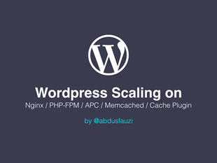

Abdus Fauzi
/Slides/Shares
I’m happy that you arrived on this page.
This is going to be my repository for any slides/items that I created for knowledge sharing.

WordPress Scalling (Part 1): Nginx, PHP-FPM, APC, Memcached, WP Plugins, Varnish Cache
WordPress Scaling (Part 2): Configuring Varnish Cache
Soon, maybe?